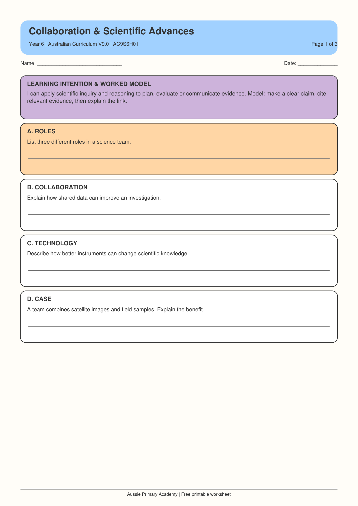

About this worksheet
This Year 6 Science worksheet focuses on Science as a Human Endeavour. Students consider why scientific advances are often collaborative and how new knowledge can build on earlier ideas, evidence and contributions.
Australia · Year 6 · Science
Explore how scientific knowledge develops when people collaborate, share evidence and build on the work of others.

This Year 6 Science worksheet focuses on Science as a Human Endeavour. Students consider why scientific advances are often collaborative and how new knowledge can build on earlier ideas, evidence and contributions.
How collaboration and earlier scientific work contribute to advances in science.
Curriculum area: Science as a human endeavour · Nature and development of science · Code: AC9S6H01
Explore related topics to build a connected Year 6 Science learning sequence.